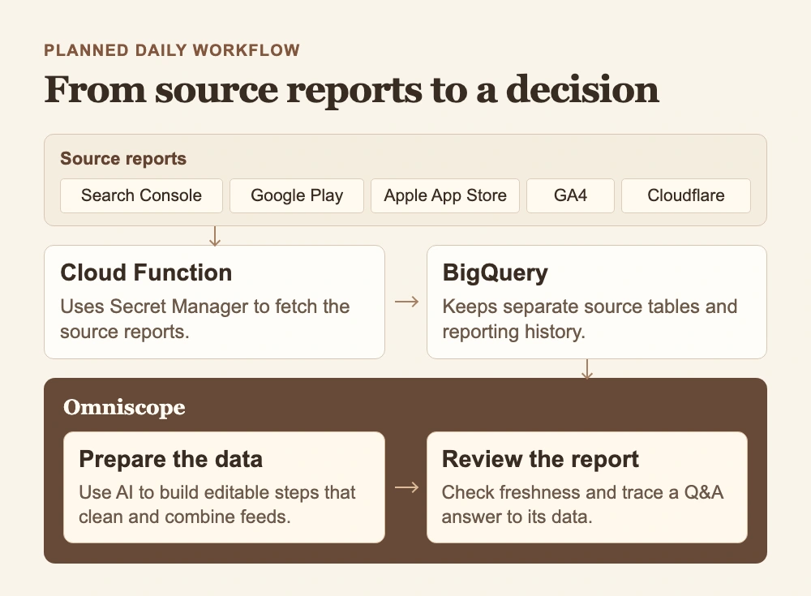
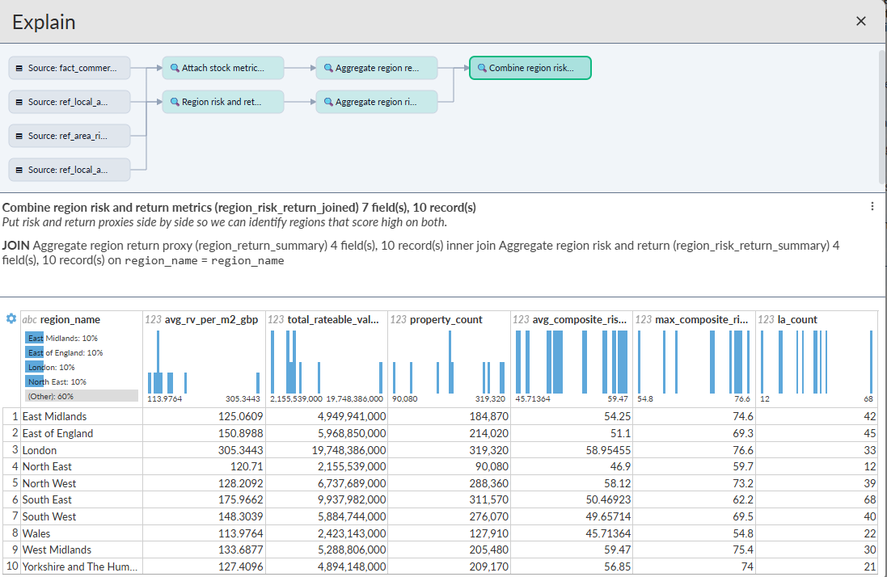

AI engineering
How I’m using Omniscope and AI for daily app analytics
Two charts in my Omniscope app analytics briefing read the same data. Here’s how we traced the mistake, fixed both bindings and checked the saved report.
Two charts were reading the same data
The first layout for my app analytics briefing had one chart for Google search clicks and another for taps on app-store links. Report Ninja generated the layout from a prompt. When we checked the charts, both were reading the same combined input. The labels described two different measures, but the lines couldn’t tell me how those measures moved.
I wanted one briefing for Travel Document Vault and my websites. Search Console tells me when someone clicks a Google result. GA4 records website activity, including taps on links to the stores. The counts come from different sources and reporting periods. My question was practical: if search traffic changes, which landing pages are worth a closer look, and do I have enough coverage to compare them?
I work at Visokio, the team behind Omniscope, and develop Travel Document Vault independently.

We traced each chart back to its source
I worked with Codex through Omniscope’s MCP connection to load aggregate CSV snapshots. The agent set up editable workflow blocks to append compatible rows, set types for dates and counts, and filter the data into outputs for individual views. I could open the workflow and inspect what each step produced.
We held off comparing the lines. We gave search clicks and store-link taps separate filtered outputs and selected the corresponding source for each chart in the report editor. We checked each plotted series against its snapshot, including the dates it covered.
We corrected both affected chart bindings. We then reopened the saved report in a fresh browser tab and checked all five report tabs. The Trends tab still showed the two distinct series. That was the result I needed before using the briefing to compare them.

How I’m bringing the five feeds into Omniscope
The daily briefing is meant to bring together Search Console, GA4, Cloudflare, App Store Connect and Google Play. I’ve tested the initial BigQuery imports. The Omniscope report we checked still reads dated CSV snapshots.
In the setup I’m building, Cloud Scheduler would trigger a Cloud Function each day. The function would use its own identity to read the credentials it needs from Google Secret Manager, fetch the five feeds and write them to separate BigQuery tables with their reporting dates intact.
Omniscope would read those tables after the import. I’d use the same workflow to standardise dates and field names and give each chart its own source. Before relying on the daily refresh, I want to run it unattended, reopen the report and trace a changed point back to the right source and day.

What I check before acting on a trend
My rule now is to check the measure, source and reporting dates, then compare the plotted values with the source rows. I’d apply that rule in any reporting tool. Omniscope gives me a place to inspect the preparation and charts together.
My next test is to ask Insight Explorer which measure changed and how much of the period each feed covers. I’d open Explain query to inspect the source, filters and returned rows, then compare the answer with the data.
If search clicks rise and store-link taps fall, I’d check which landing pages gained traffic. If a page attracted relevant searches and few readers tapped through, I’d test a clearer route to the app from that page. I’d keep any unreported store day pending.
I’d try Omniscope’s AI Decision block with Jev from TypeSafe AI to flag what to investigate now, review later or leave pending for more evidence.

The takeaway
Before acting on a trend, check the measure, source and dates against the original rows. Keep a missing reporting day pending.
Try Omniscope for freeExplore Visokio
Sources
Thanks for reading.
These are my personal views and experiences. They do not represent the views of Visokio or any other organisation.
Share this note